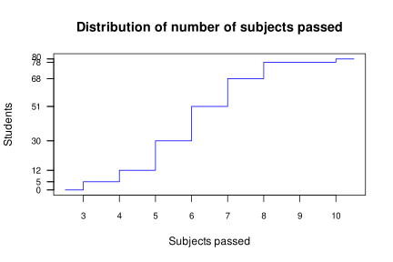
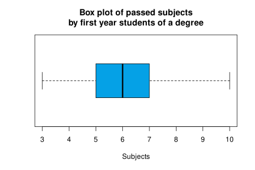

Physiotherapy exam 2021-03-17 Degrees: Physiotherapy Date: March 17, 2021 Descriptive Statistics and Regression Question 1 The chart below shows the distribution of the number of subjects passed in a sample of first year students of a degree.  Draw the box and whiskers plot and interpret it. Compute the central tendency statistics and interpret them. How is the asymmetry of the distribution? And the kurtosis? Can we assume that the sample comes from a normal population? If the mean of subjects passed in the second year was 5.5 and the variance was 2, is the mean of the subjects passed in the first year more or less representative than the one of the second year? Which student is better, a first year student that pass 7 subjects or a second year student that pass 6 subjects? Use the following sums for the computations: $\sum x_i=478$ subjects, $\sum x_i^2=3036$ subjects$^2$, $\sum (x_i-\bar x)^3=29.5$ subjects$^3$ and $\sum (x_i-\bar x)^4=1226.27$ subjects$^4$. Show solution Quartiles: $Q_1=5$ subjects, $Q_2=6$ subjects, $Q_3=7$ subjects. $IQR = 2$ subjects. Fences: $f_1=2$ subjects and $f_2=10$ subjects.  50% of central data fall between 5 and 7 subjects, that is a moderate dispersion. The are no outliers and the right whisker is a little bit longer than the left one, so the distribution is a little bit right skew but almost normal. $\bar x=5.975$ subjects, $Me=6$ subjects and $Mo=6$ subjects. They are very close, and that means that the distribution is normal. $s^2=2.2494$ (subjects)$^2$, $s=1.4998$ subjects and $g_1=0.1093$, so that the distribution is slightly skewed to the right. $g_2=0.0295$, so that the distribution is a little bit more peaked than a Gauss bell. We can assume that the sample comes from a normal population as both, the coefficient of skewness and the coefficient of kurtosis, are between -2 and 2. Let $Y$ the number of subjects passed the second year. Then, $cv_x=0.251$ and $cv_y=0.2571$. As the coefficient of variation of the first year is a little bit smaller than the one of the second year, the mean of the first year is a little bit more representative. Standard score for the first year: $z(7)=0.6834$. Standard score for the second year: $z(6)=0.3536$. As the standard score of $7$ the first year is greater than the standard score of $6$ the second year, the firs year student is better. Question 2 The table below shows the number of days of rehabilitation for a knee injury, and the knee flexion angle in degrees after those days. $$ \begin{array}{lrrrrrrrrr} \hline \mbox{Days} & 10 & 15 & 20 & 25 & 30 & 35 & 40 & 45 & 50 \newline \mbox{Angle} & 45 & 58 & 65 & 75 & 82 & 88 & 91 & 93 & 94 \newline \hline \end{array} $$ Compute the covariance of the number of days of rehabilitation and the knee flexion angle, and interpret it. According to the regression line, how many degrees increases or decreases the knee flexion angle per day of rehabilitation? According to the logarithmic model, what is the expected number of degrees of the knee flexion angle after 32 days? Is this prediction more or less reliable than the prediction of the linear model? According to the exponential model, how many days of rehabilitation are required to get a knee flexion angle of 120degrees. Is this prediction reliable? Use the following sums for the computations ($X$=Days of rehabilitation and $Y$=knee flexion angle): $\sum x_i=270$ days, $\sum \log(x_i)=29.5894$ $\log(\mbox{days})$,$\sum y_j=691$ degrees, $\sum \log(y_j)=38.8298$$\log(\mbox{degrees})$, $\sum x_i^2=9600$ days$^2$, $\sum \log(x_i)^2=99.5821$$\log(\mbox{days})^2$, $\sum y_j^2=55473$ degrees$^2$,$\sum \log(y_j)^2=168.0436$ $\log(\mbox{degrees})^2$, $\sum x_iy_j=22560$ days$\cdot$degrees,$\sum x_i\log(y_j)=1190.8727$ days$\cdot\log(\mbox{degrees})$,$\sum \log(x_i)y_j=2346.0281$ $\log(\mbox{days})$degrees,$\sum \log(x_i)\log(y_j)=128.738$$\log(\mbox{days})\log(\mbox{degrees})$. Show solution $\overline{x}=30$ days, $s_x^2=166.6667$ days$^2$. $\bar y=76.7778$ degrees, $s_y^2=268.8395$ degrees$^2$. $s_{xy}=203.3333$ days$\cdot$degrees. As the covariance is positive, there is a direct linear relation between the number of days of rehabilitation and the knee flexion angle. $b_{yx}=1.22$ degrees/day, therefore the knee flexion angle will increase$1.22$ degrees per day of rehabilitation. $\overline{\log(x)}=3.2877$ log(days), $s_{\log(x)}^2=0.2557$log(days)$^2$ and $s_{\log(x)y}=8.247$ log(days)degrees. Logarithmic regression model: $y=-29.2741+32.2571\log(x)$. Prediction: $y(32)=82.5205$ degrees. The logarithmic coefficient of determination is $0.9895$ and the linear coefficient of determination is $0.9227$. Thus, the prediction with the logarithmic model is more reliable as the coefficient of determination of the logarithmic model is greater. Exponential regression model: $x=e^{0.9324+0.0307y}$. Prediction: $x(120)=100.8475$ days. This prediction is not reliable as 120 degrees falls far away of the range of values observed in the sample for the knee flexion angle. Exam Statistics Biostatistics Physiotherapy Previous Physiotherapy exam 2021-05-05 Next Physiotherapy exam 2020-06-19